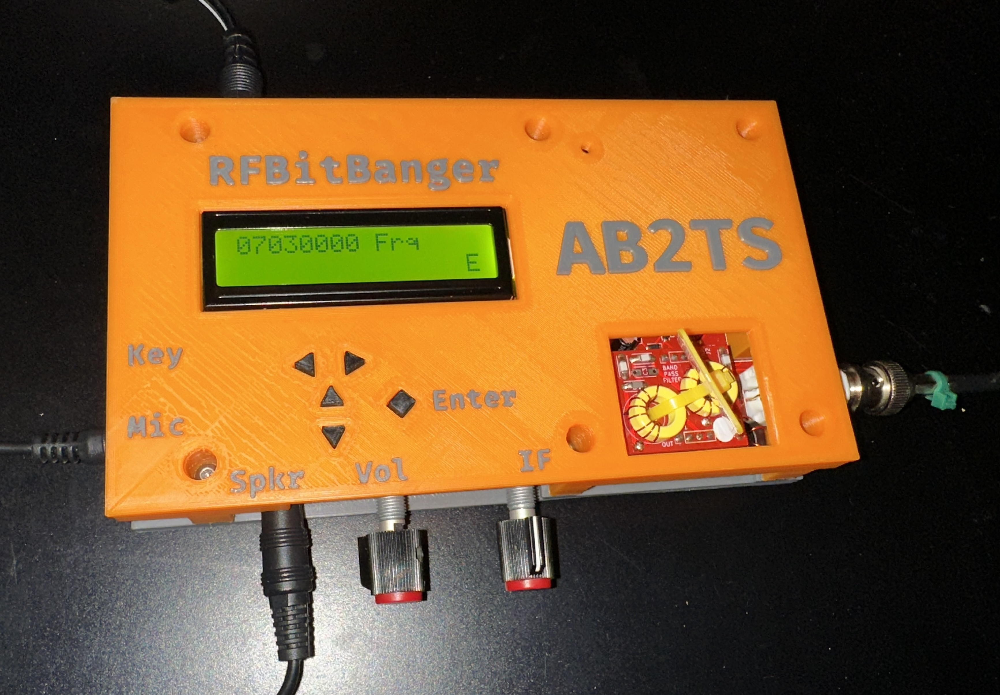

My version of the rfBitBanger FreeCAD case.

Adjusted the size and location of the openings for the LED display and the RF filter modules to better fit my equipment. I thought the orginal openings were excessively large.
Changed the navigation buttons to triangular shapes to better indicate their function.
Changed the enter button to be a diamond shape.
Added a chamfer to one of the top cover bosses to provide clearance for an adjacent surface mount component.
Changed the top case recessed lettering to raised lettering and re-located the lettering to better suit my preference. Lettering location, font and size can be adjusted in the FreeCAD spreadsheet model item.
Call sign now included in the lettering. Call sign can be edited in the FreeCAD spreadsheet model item.
Recommend that the top case be printed with the lettering up to permit two color printing of the lettering.
Two color printing of the lettering is possible with a single color printer. For example CURA has a script you can use to permit a filament change at a specific layer. Instructions are a Google search away.
Your milage may vary.
You can find the stl files for 3D printing at this link: https://github.com/gweep/RFBitBanger_Case_AB2TS
Thanks to tonsky for the free FiraCode font. https://github.com/tonsky/FiraCode